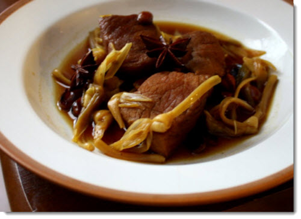

Exotic Zebra Recipe
Posted on July 28, 2013 by Rina Kleinhans

This is zebra stew
Recipe
1 kg zebra meat, using topside
1 tablespoon flour
Good pinch of mixed herbs
1 lb. tomatoes, peeled
Salt and pepper
Pinch of celery salt
3 tablespoons oil
Pinch of paprika
1 cup stock or Knorr-Swiss onion soup
½ cup cream
Cut meat into stewing pieces, dip in seasoned flour and brown in oil. Add tomatoes, quartered and seeds removed, then the stock or soup and seasoning. Simmer until tender, depending on age of zebra. Just before serving add cream and a little red wine, if available
Exotic Cajun Alligator Recipe
Posted on August 13, 2014
Ingredients:
2 lbs. alligator, sliced into strips
1 can of beer, any variety
1/2 C all purpose flour
1 C yellow corn meal
1 tsp cayenne pepper
1 tsp onion powder
1 tsp dried thyme
2 tsp garlic powder
1 tsp oregano
1 tsp salt
1 tsp pepper
vegetable oil, for frying
Directions:
Place the cornmeal in a shallow dish.
In a separate shallow bowl, mix together the beer, flour, and spices to make a batter.
Dip each strip of alligator meat into the batter, then coat liberally in the corn meal. Set the strips aside on a sheet of wax paper until ready to fry.
Heat about a half inch of oil in a large skillet.
When the oil is hot, add the breaded alligator strips to the pan. Cook until browned, then flip and cook until the other side is brown.
Continue to cook the alligator strips in batches until it is all done.
.